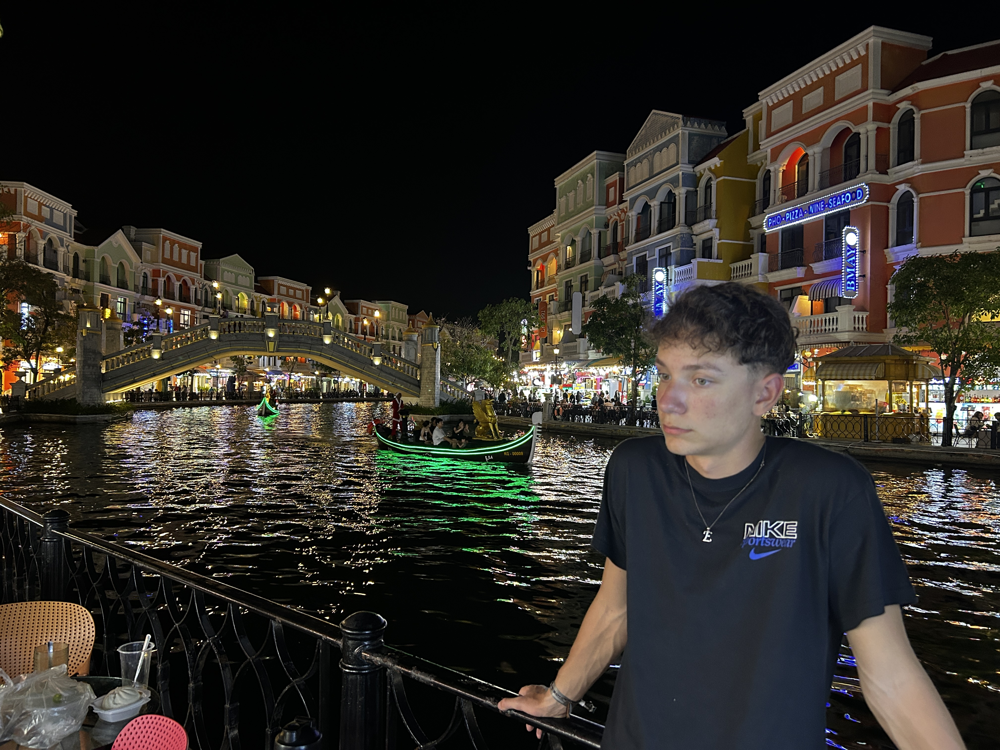
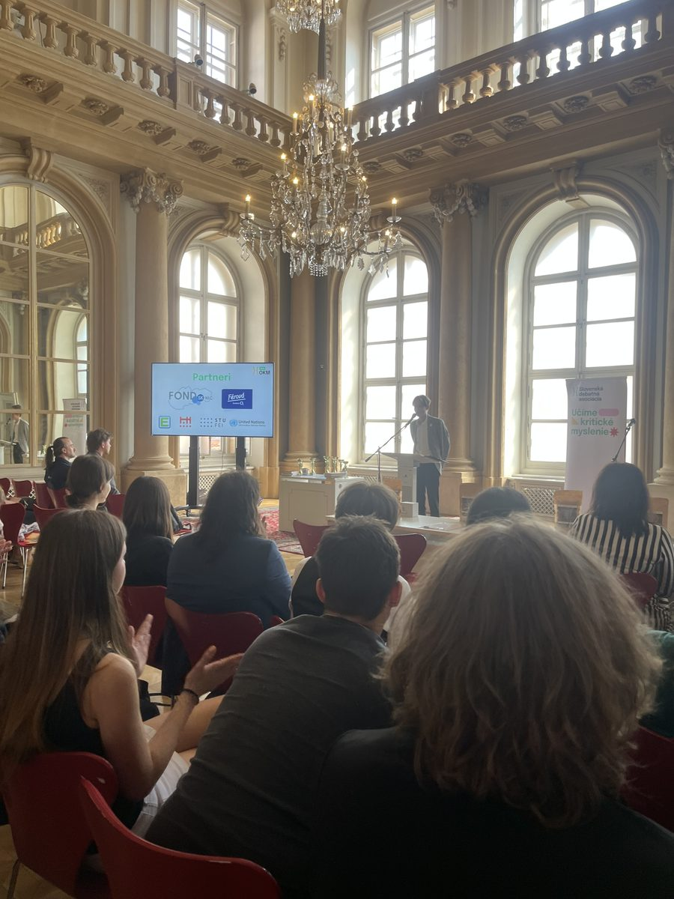
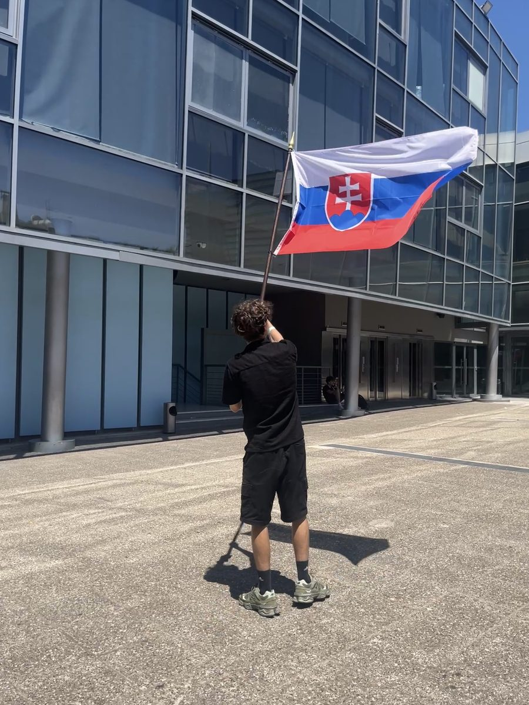
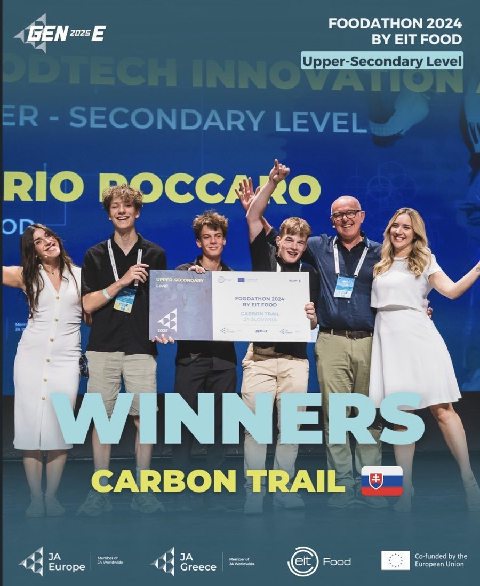
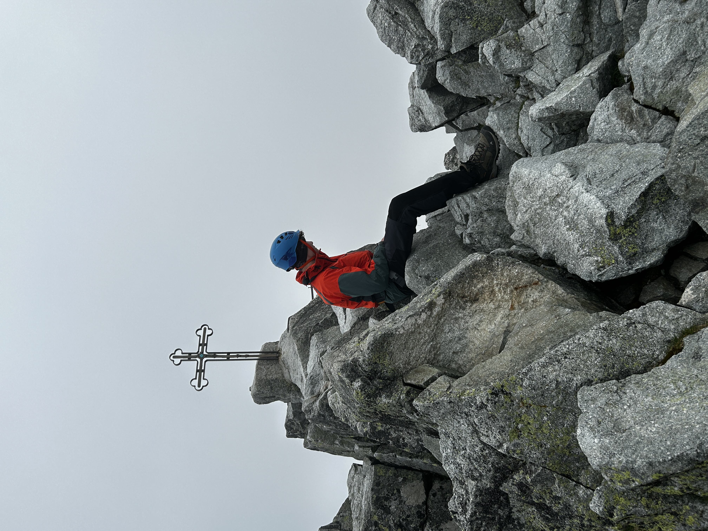
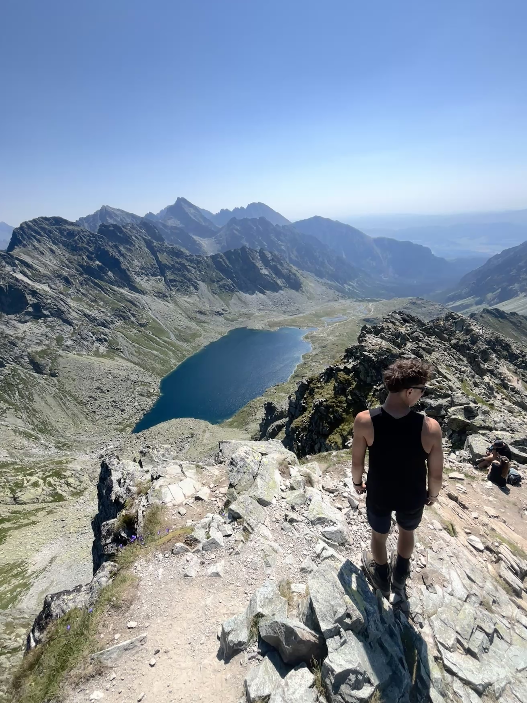
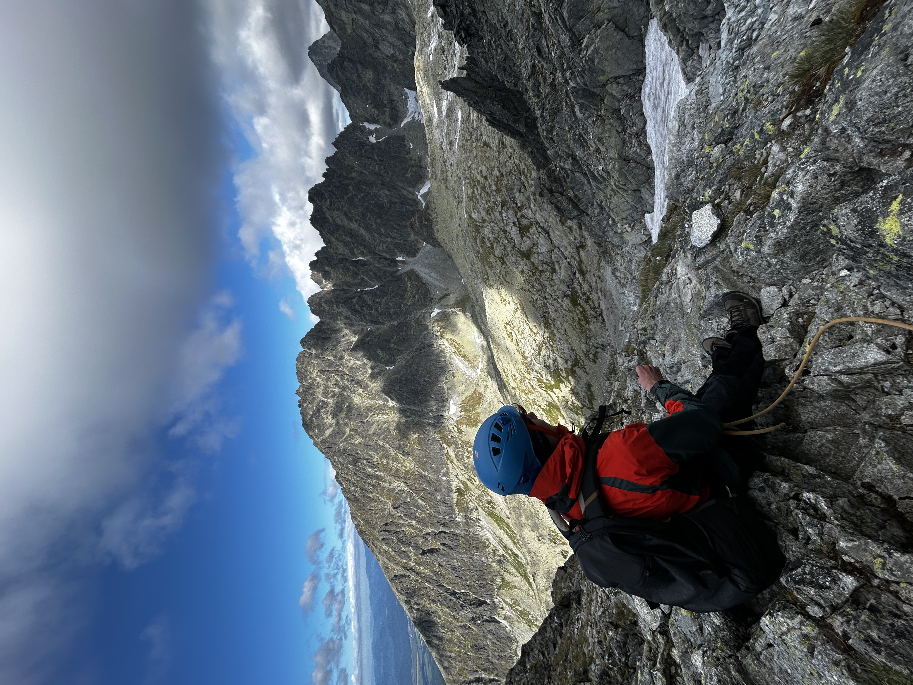

DANIEL
ŠTORCEL
Two years in Slovakia's Top 5 for critical thinking. A research project at the Slovak Academy of Sciences. A startup with a dragon on it. A mountain that isn't climbed yet.
I like figuring things out that aren't on the curriculum. Some weeks that's a Python script or a cybersecurity rabbit hole; other weeks it's a pitch deck, a training plan, or the chemistry of a thin film under a microscope. I don't think of these as separate lanes — they're just what I'm curious about that month.
I'm competitive by nature and calm under pressure — I've worked warehouse shifts and bartended festivals, led a marketing track on an international team, and sat with lab equipment for hours getting a sample right. What connects it is the same instinct: build it, test it, see if it holds up.
Track record
Competitions I've shown up for, across reasoning, business, and innovation.
- Nationwide competition focused on critical thinking, argumentation, media literacy, working with data and exposing manipulative claims.
- In 2024/25, 11,117 students entered the secondary-school round — only the top 48 reached the national final.
- Finished in the national Top 5 in two consecutive years.
- Timed tests demanded fast analysis of arguments, statistics, sources and manipulation techniques.
- The final adds argumentation and public speaking on top of the written tests.

- Slovak 2025/26 edition: about 2,140 students from 179 schools in 807 teams.
- Europe-wide: 28,832 students from 22 countries in 9,096 teams.
- The national phase was three statistics tests; the best teams advanced.
- The European round: a 2-minute video in English that builds a "statistical portrait" of a country from official statistical data.
- Slovakia had four teams in the European final, and three Slovak videos made the European Top 5.

- Won the International Innovation Award at JA Europe Foodathon.
- Developed a student venture concept in an international team, working with European and African students.
- My role: led marketing and financial planning.
- Produced promotional content and contributed to the final pitch.

- 3rd place in the Slovak round and 3rd overall in the European final.
- Developed and presented a complete business concept as a team.
- My contribution: the business model, marketing strategy, financial planning and the final pitch.
Things I've built
Startup concepts, brand experiments, and ideas I keep coming back to.
A student innovation concept built with a team in under a weekend for JA Europe Foodathon, refined with a mentor into a pitch-ready product.
My part: marketing, finance, the promo video, and communicating with our African counterparts on the team.
A hardcore preworkout brand concept — neon green, black, a grenade and a dragon. "STAY LOCKED IN." Built to learn branding and social growth by doing it.
My part: identity, TikTok strategy, and a "Veiny Galaxy" campaign that pulled ~10k likes.
A non-profit concept connecting Erasmus+, international students, and mountain expeditions — community and personal growth through adventure.
My part: the concept and a distinct visual identity for its site.
A platform idea for hikers and mountaineers — surfacing suitable routes, outdoor experiences, and discounted gear across stores using AI.
My part: the original idea, unbuilt so far.
Research at SAV
"Influence of deposition of atomic layers of zinc oxide on the structure of a carbon-silicon electrode" — a project carried out at the Slovak Academy of Sciences.
Some things get measured in grades. This one gets measured in altitude — and it isn't climbed yet. The goal is next summer.



Reached out about equipment partnerships to The North Face, Patagonia, La Sportiva, Exped and Blue Ice — conversations, not confirmed deals.